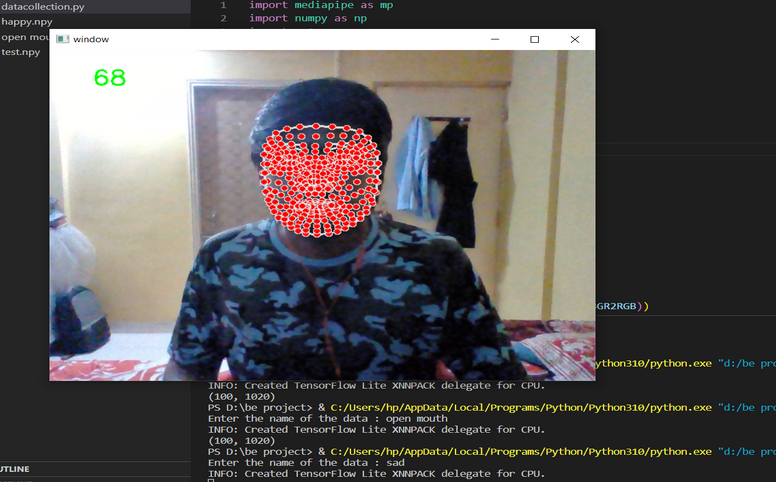

Music recommendation using facial recognition
Project overview
Created a project that involves capturing the user's facial expression and using a deep neural network model to analyze the facial features and identify the user's emotional state. Based on the user's emotional state, the system recommends a song list that matches their mood.
Architecture
System architecture consist of three parts data collection, model training & Emotion detection and music recommendation.
Data Collection
We obtain the Facial Landmarks from user through the camera and collect this data for model training or emotion detection
Model training
We train the model using the Data collected from the user i.e. Facial Landmarks to recognise particular landmark with specific emotion
Emotion detection
We detect the emotion using the model that we trained on user data Music recommendation Finally, we recommend the music according to the emotion detected on YouTube music or Spotify.
System Overview
data collection
In data collection module it captures video of a person's face and hands using a camera, and extracts specific points on the face and hands called "landmarks". It then saves the coordinates of these landmarks as data in a file. The purpose of this code is to collect data for training a model that can detect emotions based on facial expressions and hand
movements. A library called Mediapipe is used to detect and extract the landmark data from the user's face and hands. It then stores this data as a list of coordinates for each frame of the video stream. Once the user has collected enough data, the code saves the data as a numpy array file with the input name. The numpy array file can be used later for model training or emotion detection.

Model training
In model training it trains a neural network model to recognize certain gestures or poses from landmarks detected in a video stream. It first loads data from several numpy files that contain the landmark coordinates of the detected faces and hands in the video stream. It then converts the labels (gestures or poses) from strings to integers, and encodes them using one-hot encoding. The data is mixed up and shuffled for training. The model is defined with three dense layers, where the input is the landmark data and the output is a softmax probability distribution over the possible labels. The model is compiled with a categorical crossentropy loss function and trained for 50 epochs. Finally, the trained model is saved, and the label names are saved in a separate numpy file.
Emotion detection
In music recommendation module it uses computer vision and machine learning techniques to recognize a person's facial expression. It uses a webcam to capture the user's emotion by analyzing the landmarks on their face and hand gestures using computer vision techniques. It loads a pre-trained model to predict the user's emotio. When the user clicks the "Recommend me songs" button, the code opens a YouTube playlist page based on the user's input and their captured emotion.